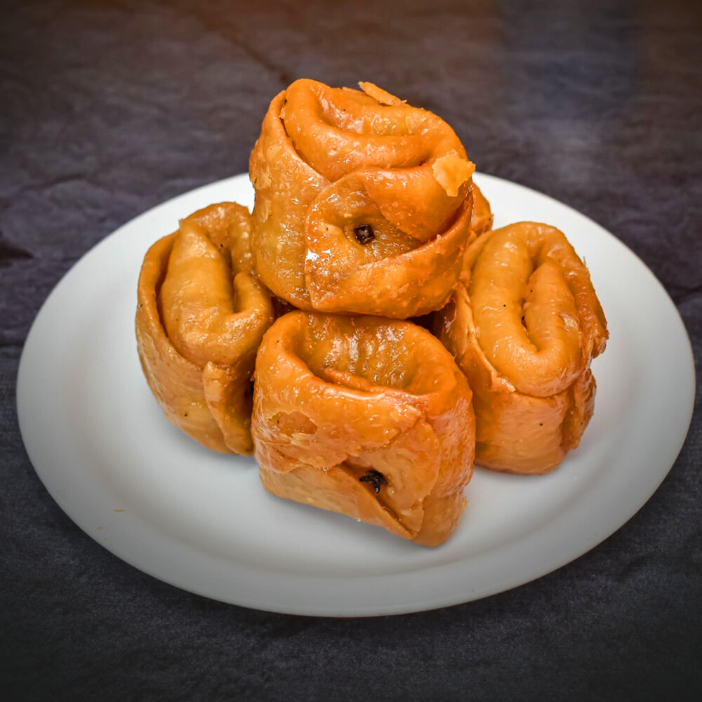

Image credit: Bihar Tourism
Crispy outside, juicy inside!
Bihar Tourism puts it well:
The outer layer is made using all-purpose flour and it is filled with a mix of milk mava and nuts. The outer layer is sealed using lavang (clove) which gives an exotic aroma to it. When served warm it tastes awesome. The richness of mava, nuts, and ghee gives a delicious taste. …
The clove of this crusty crunchy dessert sets it apart from others. As soon as you keep it in your mouth, the strong taste of clove will melt in the whole mouth with a sweetness flavor.
A recipe for making 20 small laung latas, taken from Geeta's Cuisine, follows.
Ingredients
For dough:
- 2 cups all purpose flour
- 1 tbsp fine rava or sooji
- 1/4 tbsp baking powder
- 1/8 tbsp salt
- 1/3 cup ghee or butter
- 1/2 cup chilled water
For sugar syrup:
- 1-1/2 cup sugar
- 1 cup water
- A few threads of saffron
- 3-4 drops of rose essense
- 1-2 drops lemon juice
For filling:
- 3/4 cup mava
- 3 tsp sugar
- 2-3 drops kewra essense
- 1/8 tsp green cardamom (freshly crushed)0
- 1/3 cup fine chopped nuts
- 40-45 cloves
Steps
- Take all purpose flour, butter, salt, baking powder and rava in a mixing bowl.
- Mix all the ingredients with hand till it gets crumbled texture.
- Mix while gradually adding chilled water. Leave the dough in this crumbled state for about 5 minutes.
- Knead gently till mixed well. Set aside for 10 minutes.
- Boil water, sugar, rose essences, saffron threads, cardamom powder and lemon juice in a deep pan to prepare sugar syrup.
- Mix mava, chopped nuts and sugar and heat in a microwave oven for 30 seconds to prepare filling.
- Divide the dough into 20 small balls.
- Stuff balls with filling, seal dough with cloves, and deep fry in ghee.
- Drop the balls in warm sugar syrup and stir for 15 minutes.
- Drain sugar syrup.
- Enjoy laung lata!
Back home.
Back to the top.